<!DOCTYPE html>
<html lang="en">

<head>
  <meta charset="utf-8" />
  <meta name="viewport" content="width=device-width, initial-scale=1.0, maximum-scale=1.0, user-scalable=no" />

  <title>State Sharding (Cumulus & Collators)</title>
  <link rel="icon" href="./../../assets/favicon.svg" />
  <link rel="shortcut icon" href="./../../assets/favicon.png" />
  <link rel="stylesheet" href="./../../dist/reset.css" />
  <link rel="stylesheet" href="./../../dist/reveal.css" />
  <link rel="stylesheet" href="./../.././assets/styles/PBA-theme.css" id="theme" />
  <link rel="stylesheet" href="./../../css/highlight/shades-of-purple.css" />

  <link rel="stylesheet" href="./../.././assets/styles/custom-classes.css" />

</head>

<body class="site">
  <header class="site-header">
    <!-- This logo is a link only on the watching server, not the production build -->
    <a href="">
      
    </a>
  </header>
  <main class="reveal">
    <article class="slides">
      <section  data-markdown><script type="text/template">

# State Sharding

## Collators and Cumulus

<aside class="notes"><p>Today we&#39;ll be covering State Sharding in Polkadot. To understand it we&#39;ll be diving deeper into collator nodes as well as a Polkadot-sdk tool called cumulus.</p>
</aside></script></section><section  data-markdown><script type="text/template">
# State Sharding

## Actors

<pba-cols>
<pba-col>
  <ul>
    <li>Collators</li>
  </ul>
</pba-col>
<pba-col>

</pba-col>
</pba-cols>

<aside class="notes"><p>Our actors here are collators which are parachain nodes and validators which are relay chain elected nodes.</p>
</aside></script></section><section  data-markdown><script type="text/template">
# State Sharding

## Agenda

- Elves Overview
- State
- State Shards
- Collator Networks
- Collations
- Cumulus
</script></section><section  data-markdown><script type="text/template">
# ELVES

<pba-flex center>

1. **Collation: Collect transactions.**
1. Backing: Assign responsibility.
1. Availability: Preserve data.
1. Approval Checking: Verify correctness.
1. Disputes: Resolve escalations.

</pba-flex>

<aside class="notes"><p>So today&#39;s lecture is part of a 3 lecture sequence describing the ELVES protocol. ELVES is a research paper published by W3F that is describing how polkadot achieves state and execution sharding and how it does it securely.</p>
<p>There are 5 main subprotocols in ELVES. On this lecture we will diving into the Collation side of things. This is everything that happens on the parachain side which is a single Polkadot shard or rollup.</p>
</aside></script></section><section ><section data-markdown><script type="text/template">
# State Sharding

## What is State?

- Status of all the accounts, balances, variables in a blockchain
- [...]
- [...]

<aside class="notes"><p>First a quick reminder to bring everyone up to speed. What is tate in a blockchain context?</p>
<p>Blockchains were often described as big ledgers. This analogy was pretty dismissive of the execution layer of blockchains but it was pretty accurate when it comes to the state layer.</p>
<p>State is all aggregated status of all the data, variables, balances, accounts, smart contracts etc in the blockchain system. If Alice has 10 tokens on her account then this information is a part of the state. State is ofc more than balances. All the blockchain programmables bits, like wasm runtimes, smart contracts etc are also in the state. They are blobs we can interact with.</p>
</aside></script></section><section data-markdown><script type="text/template">
# State Sharding

## What is State?

- Status of all the accounts, balances, variables in a blockchain
- State is modified by transactions/extrinsics
- [...]

<aside class="notes"><p>State can also be modified by TXs and extrinsics. So if for instance Alice sends 5 DOT to Bob it modifies the bit of state that corresponds to Alice, subtracts 5 from it and moves the 5 to Bob&#39;s State. Transactions are effectively operations on the state, they allow us to modify it. Hence we often call executing them state transitions.</p>
</aside></script></section><section data-markdown><script type="text/template">
# State Sharding

## What is State?

- Status of all the accounts, balances, variables in a blockchain
- State is modified by transactions/extrinsics
- State is usually stored by ALL nodes that participate in consensus

<aside class="notes"><p>That is also why everyone needs to keep track of all the state. Because to apply the transactions we need to have the relevant state. So in most blockchains and I really mean nearly ALL of them. The state is simply and naively just duplicated between ALL the nodes in the network.</p>
</aside></script></section></section><section ><section data-markdown><script type="text/template">
# (No) State Sharding

<pba-cols>
<pba-col>
  <ul>
    <li>Imagine no state sharding</li>
    <li>All nodes need to store all the state</li>
    <li>O(n^2) storage complexity</li>
  </ul>
</pba-col>
<pba-col>

</pba-col>
</pba-cols>

<aside class="notes"><p>So in a world with no state sharding all the nodes store all the data entries.</p>
</aside></script></section><section data-markdown><script type="text/template">
# (No) State Sharding

<pba-cols>
<pba-col>
  <ul>
    <li>Imagine no state sharding</li>
    <li>All nodes need to store all the state</li>
    <li>O(n^2) storage complexity</li>
  </ul>
</pba-col>
<pba-col>

</pba-col>
</pba-cols>

<aside class="notes"><p>if we have a thousand items in the state and want to have a thousand nodes. That is already a milion things to store across the whole network. It is effectively quadratic in storage complexity.</p>
</aside></script></section><section data-markdown><script type="text/template">
# (No) State Sharding

<pba-cols>
<pba-col>
  <ul>
    <li>Imagine no state sharding</li>
    <li>All nodes need to store all the state</li>
    <li>O(n^2) storage complexity</li>
  </ul>
</pba-col>
<pba-col>

</pba-col>
</pba-cols>

<aside class="notes"><p>If we would have a million items to store and a thousand nodes then we already need over a billion of items stored across the network. This is not sustainable and it can lead to centralisation if it imposes higher and higher hardware requirements.</p>
</aside></script></section></section><section ><section data-markdown><script type="text/template">
# State Sharding

## Data replication

<pba-cols>
<pba-col>
  <ul>
    <li>Data replication is good...</li>
    <li>but only in moderation</li>
  </ul>
</pba-col>
<pba-col>

</pba-col>
</pba-cols>

<aside class="notes"><p>But data replication is not inherently bad. It is in fact really really good, it provides decentralisation and safety so we don&#39;t want to get rid of it. But just by limiting data replication we can achieve simillar security guarantees AND drastically reduce the storage overhead.</p>
</aside></script></section><section data-markdown><script type="text/template">
# State Sharding

<pba-cols>
<pba-col>
  <ul>
    <li>State is split into multiple shards (rollups/parachains)</li>
    <li>Collators store and manage parachain state</li>
    <li>Validators do NOT store parachain state</li>
    <li>Validators only store hashes of parachain state and their runtimes</li>
  </ul>
</pba-col>
<pba-col>

</pba-col>
</pba-cols>

<aside class="notes"><p>The polkadot network instead of storing it&#39;s state in a single monolithic storage decided to split and silo it&#39;s storage.
And this is partially where parachains even come from. Each small silo for a state is their own little blockchain that has it&#39;s own sovereign state.</p>
<p>The nodes of each parachain AKA collators are responsible with storing and managing the parachain state. Relay chain validators only store a hash of the parachain state.</p>
<p>Additionally the relay chain also has some state in it, but the general direction is that we want to minimize the state on the relay chain. The relay chain should be completely transactionless and generally unavailable to the end-users. It is a meta-layer to be used by rollups and people. This initiative is often called the Minimal Relay Chain.</p>
</aside></script></section><section data-markdown><script type="text/template">
# State Sharding

<pba-cols>
<pba-col>
  <ul>
    <li>Relay chain stores the minimum allowed amount of state</li>
    <li>Ideally there are no transactions at all on the relay chain</li>
  </ul>
</pba-col>
<pba-col>

</pba-col>
</pba-cols>

<aside class="notes"><p>Additionally the relay chain also has some state in it, but the general direction is that we want to minimize the state on the relay chain. The relay chain should be completely transactionless and generally unavailable to the end-users. It is a meta-layer to be used by rollups and people. This initiative is often called the Minimal Relay Chain.</p>
</aside></script></section></section><section ><section data-markdown><script type="text/template">
# State Sharding

## Parachains

- Parachain Runtime (WASM STF)
- Collator Network
- State

<aside class="notes"><p>Now that we&#39;ve mentioned parachains again it might be time to talk about them a bit more.
Parachains are generally just sovereign blockchain networks. Most of them are built with Substrate and Frame. Each parachain features a distinct and custom built wasm runtime (that is the state transition funciton), a collator network and a sovereign parachain state over which they preside.</p>
</aside></script></section><section data-markdown><script type="text/template">
# State Sharding

## Collator Networks

- Choose your own block production engine (usually Aura)
- Customise your collator incentives
- Permissioned vs permissionless?

<aside class="notes"><p>How exactly a collator network should look like is left nearly completely up to the specific parachain and its governance.</p>
<p>The network can decide on things like, what block parachain block authoring to use. Most default to Aura since most of the security will come from the relay chain at later stages anyway.</p>
<p>Parachains also control how to incentivise collators. Some of them run their own staking systems where collators get rewarded for their work. Others prefer it keep things more centralised and under control. Substrate and cumulus allows you to pick from a wide variety of options, everything from a centrally controlled chain run on beefy collators to, decetralised chains is on the table.</p>
</aside></script></section><section data-markdown><script type="text/template">
# State Sharding

## Collator Duties

- Store parachain state
- Accept transactions to TX pool
- Build parachain blocks (a collation of transactions)
- Send the collations to the relay chain validators

<aside class="notes"><p>But the one thing all of them need to do no matter what consenus, incentivisation or topology they use is to eventually keep building parachain blocks. Collators are most importantly collecting aggregating and sequencing all parachain transactions into parachain blocks. We often call parachain blocks parablocks. The parablock together with some extra data is sent over to the relay chain.</p>
</aside></script></section></section><section ><section data-markdown><script type="text/template">
# State Sharding

## Collation Validation

<aside class="notes"><p>And why do collations get sent over to the relay chain? To get validated of course. The parachains use the rely chain as an auditing layer to inherit its economic security. How relay chain achieves consensus on the validity of collations is a topic for next the next 2 lectures but let&#39;s take a look how an singular collation could be verified by a singular other node. No consensus yet, just a local check.</p>
</aside></script></section><section data-markdown><script type="text/template">
# State Sharding

## Collation Validation

<pba-flex center>

- The relay chain ensures that every parachain block follows the rules defined by that parachain's current code.

<!-- .element: class="fragment" data-fragment-index="1" -->

- Constraint: The relay chain validators must be able to execute runtime validation of a parachain block without access to the entirety of that parachain's state

<!-- .element: class="fragment" data-fragment-index="2" -->

</pba-flex>

<div class="r-stack">


<!-- .element: class="fragment" data-fragment-index="1" -->

<!-- .element: class="fragment" data-fragment-index="2" -->
</div>

<pba-flex center>

</pba-flex>

<aside class="notes"><p>Well a parachain block is just a bunch of transactions altering the state.</p>
<p>SWITCH</p>
<p>Here we can see a state transition occuring as a consequence of the transactions.</p>
<p>So if someone has access to the previous state, and appplies the the transactions using the WASM runtime which is the state transition function then they receive the output state. If all the transitions are legal then the resulting state is also legal.</p>
<p>SWITCH</p>
<p>But remember that relay chain validators do NOT store parachain state. So imagine telling your bank to send 100 dollars to Bob, but the bank does not even know how much money you have. Is that a legal transaction? Hard to say we dont know how much you have.</p>
<p>So to answer how we deal with it let&#39;s dive into the code and do some inspecting.</p>
</aside></script></section><section data-markdown><script type="text/template">
# State Sharding

## Collation

```rust[1|8-9|10-11]
pub struct Collation<BlockNumber = polkadot_primitives::BlockNumber> {
	/// Messages destined to be interpreted by the Relay chain itself.
	pub upward_messages: UpwardMessages,
	/// The horizontal messages sent by the parachain.
	pub horizontal_messages: HorizontalMessages,
	/// New validation code.
	pub new_validation_code: Option<ValidationCode>,
	/// The head-data produced as a result of execution.
	pub head_data: HeadData,
	/// Proof of storage to verify the state transition of the parachain.
	pub proof_of_validity: MaybeCompressedPoV,
	/// The number of messages processed from the DMQ.
	pub processed_downward_messages: u32,
	/// The mark which specifies the block number up to which all inbound HRMP messages are processed.
	pub hrmp_watermark: BlockNumber,
}
```

<aside class="notes"><p>Here we have the actual struct used to represent a collation. There is a lot of stuff here but dont worry.</p>
<p>SWITCH</p>
<p>Right now we only care about a few items here. First is head_data. That is the promise of what we should get when we execute the parachain block.</p>
<p>SWITCH</p>
<p>Most importantly there is something called a proof of validity. If we&#39;d inspect this field further eventually we would get here:</p>
</aside></script></section><section data-markdown><script type="text/template">
# State Sharding

## Collation

```rust [6|9-10|11-12]
/// The parachain block that is created by a collator.
///
/// This is send as PoV (proof of validity block) to the relay-chain validators. There it will be
/// passed to the parachain validation Wasm blob to be validated.
#[derive(codec::Encode, codec::Decode, Clone)]
pub struct ParachainBlockData<B: BlockT> {
    /// The header of the parachain block.
    header: B::Header,
    /// The extrinsics of the parachain block.
    extrinsics: alloc::vec::Vec<B::Extrinsic>,
    /// The data that is required to emulate the storage accesses executed by all extrinsics.
    storage_proof: sp_trie::CompactProof,
}
```

<aside class="notes"><p>To the Parachain block data which is the decoded PoV.</p>
<p>Switch</p>
<p>And as expected we have a list of all transactions here, that&#39;s in the extrinsics field</p>
<p>Switch</p>
<p>but we also have a storage proof. Hmmm what&#39;s that?</p>
</aside></script></section><section data-markdown><script type="text/template">
# State Sharding

## Collation Storage Proof

- Makes up most of the information in a collation
- Acts as a replacement for the parachain's pre-state for the purpose of validating a single block
<!-- .element: class="fragment" data-fragment-index="1" -->
- It enables the construction of a sparse in-memory merkle trie
<!-- .element: class="fragment" data-fragment-index="2" -->
- State root can then be compared to that from parent header
<!-- .element: class="fragment" data-fragment-index="3" -->

<aside class="notes"><p>So that field contatins partial parachain state. All the fields being touched by executions we are validating, so read or modified need to be included in the storage proof.</p>
<p>Storage proof in fact makes up most of the collation. Extrinsic calls are usually quite light.</p>
<p>With the storage proof we can reconstruct a small part of the state that is relevant to our current state transition function and ignore other bits. But of course we cannot just trust collators so all the state items are provided as a merkle proof that we compare to the state root from the parent block.</p>
</aside></script></section><section data-markdown><script type="text/template">
# State Sharding

## Collation Storage Proof Creation

<div class="r-stack">

<!-- .element: class="fragment fade-out" data-fragment-index="1" -->

<!-- .element: class="fragment" data-fragment-index="1" -->
</div>

<br/>

- Only includes the data modified in this block along with hashes of the data from the rest of the trie
<!-- .element: class="fragment" data-fragment-index="2" -->
- This makes up the majority of the data in a collation (max 10MB)
<!-- .element: class="fragment" data-fragment-index="3" -->

<aside class="notes"><p>Let&#39;s see an example. Imagine this is our state merkle trie. And imagine Alice from A sends some funds to Bob and Charlie.</p>
<p>The other leafs are also state items but we neither read them or modify them so they are not needed to verify the transactions.</p>
<p>SWITCH</p>
<p>But we still need the hashes of them to have a proper merkle proof. So we need to supply the hashes in the green nodes which together with our data will fully reconstruct the blue node which is the state merkle root. The red leafs were omitted. So we are saving a lot of bandwitdh by not sending them. Usually we only touch a small subset for the whle state sp the savings are quite big.</p>
<ul>
<li>orange: Data values modified in this block</li>
<li>green: Hash of the siblings node required for the pov</li>
<li>white: Hash of the nodes that are constructed with orange and green nodes</li>
<li>red: Unneeded hash</li>
<li>blue: Head of the trie, hash present in the previous block header</li>
</ul>
</aside></script></section></section><section ><section data-markdown><script type="text/template">
# State Sharding

## Parachain STF

- The current STF of each Parachain is stored on the Relay Chain, wrapped as a PVF
- New state transitions that occur on a parachain must be validated against the PVF

```rust [6]
/// A struct that carries code of a parachain validation function and its hash.
///
/// Should be cheap to clone.
#[derive(Clone)]
pub struct Pvf {
    pub(crate) code: Arc<Vec<u8>>,
    pub(crate) code_hash: ValidationCodeHash,
}
```

<br/>

- PVF ≈ STF = Parachain Runtime = WASM Blob = Parachain's Code

<aside class="notes"><p>Luckily at least the State transition function is stored on the relay chain. From the perspective of the relay chain it is often called PVF - Parachain Validation Function but that is effectively just a wrapper over the state transition function. Reminder that state transition function is just the WASM blob, the parachain runtime or parachain code. We are terrible at naming things, I know.</p>
</aside></script></section><section data-markdown><script type="text/template">
#### Why PVF Rather than STF?

<pba-cols>
<pba-col center>



</pba-col>
<pba-col center>

- The PVF is not just a copy paste of the parachain Runtime

<br/>

- The PVF contains an extra function, `validate_block`

<br/>

**WHY!?**

<!-- .element: class="fragment" data-fragment-index="1" -->

</pba-col>
</pba-cols>

<aside class="notes"><p>The function <code>validate_block</code> needed to interpret all the extra information in a PoV required for validation.
This extra information is unique to each parachain and opaque to the relay chain.</p>
</aside></script></section><section data-markdown><script type="text/template">
#### Validation Path Visualized

<div class="r-stack">


</div>

<aside class="notes"><p>The input of the runtime validation process is the PoV, and the function called in the PVF is &#39;validate_block&#39;. Validate block converts the PoV into necessary inputs on top of which a parachain&#39;s STF can be run. The output created is called a CandidateReceipt.</p>
</aside></script></section><section data-markdown><script type="text/template">
#### What Does validate_block Actually Do?

<pba-flex center>

- The parachain runtime expects to run in conjunction with a parachain client
- But validation is occurring in a relay chain node
<!-- .element: class="fragment" data-fragment-index="1" -->
- We need to implement the API the parachain client exposes to the runtime, known as host functions
<!-- .element: class="fragment" data-fragment-index="2" -->
- The host functions most importantly allow the runtime to query its state, so we need a light weight replacement for the parachain's state sufficient for the execution of this single block
<!-- .element: class="fragment" data-fragment-index="3" -->
- validate_block prepares said state and host functions, then runs the parachain's STF on top of them
<!-- .element: class="fragment" data-fragment-index="4" -->

</pba-flex>
</script></section><section data-markdown><script type="text/template">
#### Validate Block in Code

```rust [2|3-4|6|8-11|14]
// Very simplified
fn validate_block(input: InputParams) -> Output {
    // First let's initialize the state
    let state = input.storage_proof.into_state().expect("Storage proof invalid");

    replace_host_functions();

    // Run Substrate's `execute_block` on top of the state
    with_state(state, || {
        execute_block(input.block).expect("Block is invalid")
    })

    // Create the output of the result
    create_output()
}
```

<aside class="notes"><ol>
<li>We construct the sparse in-memory database from the storage proof and then ensure that the storage root matches the storage root in the <code>parent_head</code>.</li>
<li>Replace host functions</li>
<li>Execute block</li>
<li>Create output. We check whether the <code>storage_root</code> and other outputs resulting from validation matched the commitments made by the collator</li>
</ol>
</aside></script></section><section data-markdown><script type="text/template">
##### Host Function Replacement Visualized

<div class="r-stack">

<!-- .element: class="fragment fade-out" data-fragment-index="1" -->

<!-- .element: class="fragment" data-fragment-index="1" -->
</div>
</script></section><section data-markdown><script type="text/template">
# State Sharding

## All Together


</script></section></section><section  data-markdown><script type="text/template">
# State Sharding

## Solochains disclaimer

<aside class="notes"><p>So you all learned substrate and frame. You can all build substrate chains. And I want to give you a reminder that Substrate is not opinionated about building just for Polkadot. Substrate chains can exist as completely independent blockchains where they try to ensure their own economic security. Substrate chains dont have to be parachains, but if they would like to be, then the transition is super easy</p>
<p>and this is where cumulus comes in.</p>
</aside></script></section><section ><section data-markdown><script type="text/template">
# State Sharding

## Cumulus

<aside class="notes"><p>So we&#39;ve discussed all the duties of collators but we ofc dont expect every parachain to reimplement them from scratch. Most of that come built in with Cumulus.</p>
</aside></script></section><section data-markdown><script type="text/template">
# State Sharding

## Cumulus


<aside class="notes"><p>Cumulus is an extension tool to Substrate. It is a bunch of libraries, scripts and tools that can take in your classic substrate chain and turn it into a polkadot compatible parachain. Cumulus is like the glue between substrate parachains and the Polkadot relay chain.</p>
<p>So most teams working on parachains in Polkadot develop their parachain purely in substrate just like a solo-chain but then they use cumulus to do the heavy-lifting of integrating with the relay chain.</p>
</aside></script></section><section data-markdown><script type="text/template">
# State Sharding

## Cumulus' Key Processes

- Follow relay relay chain progression
- Collation generation and announcement
- Request parablocks not shared by peers from relay (data recovery)

<aside class="notes"><p>We discussed a lot of the responsibilities of collators but those are in fact mostly handled by Cumulus. Cumulus has triggers and hooks for building parachain blocks and it also has the integrations to announce them to the relay chain. Additionally Cumulus follows the relay chain to notice any relay chain forks or to find the new best relay chain head.</p>
</aside></script></section><section data-markdown><script type="text/template">
## Cumulus and Parachain Runtime Upgrades

<pba-flex center>

- Every Substrate blockchain supports runtime upgrades
<!-- .element: class="fragment" data-fragment-index="0" -->
- Every time a validator wants to validate a parablock, it must first compile the PVF
<!-- .element: class="fragment" data-fragment-index="1" -->

##### Problem

<!-- .element: class="fragment" data-fragment-index="2" -->

- What happens if PVF compilation takes too long?
  <!-- .element: class="fragment" data-fragment-index="2" -->
  - Approval no-shows
  - In disputes neither side may reach super-majority

<!-- .element: class="fragment" data-fragment-index="2" -->

> Updating a Parachain runtime is not as easy as updating a standalone blockchain runtime

<!-- .element: class="fragment" data-fragment-index="3" -->

</pba-flex>
</script></section><section data-markdown><script type="text/template">
### Solution

The relay chain needs a fairly hard guarantee that PVFs can be compiled within a reasonable amount of time.

<br/>

- Collators execute a runtime upgrade but it is not applied
- Code sent in collation `Option<ValidationCode>`
- The relay chain executes the **PVF Pre-Checking Process**
- The first parachain block to be included after the end of the process applies the new runtime

<!-- .element: class="fragment" data-fragment-index="1" -->

> Cumulus follows the relay chain, waiting for a go ahead signal to apply the runtime change

<!-- .element: class="fragment" data-fragment-index="2" -->

<aside class="notes"><p><a href="https://github.com/paritytech/cumulus/blob/master/docs/overview.md#runtime-upgrade">https://github.com/paritytech/cumulus/blob/master/docs/overview.md#runtime-upgrade</a></p>
</aside></script></section><section data-markdown><script type="text/template">
##### PVF Pre-Checking Process

<pba-flex center>

- Track
- Check
<!-- .element: class="fragment" data-fragment-index="1" -->
- Vote
<!-- .element: class="fragment" data-fragment-index="2" -->
- Conclude
<!-- .element: class="fragment" data-fragment-index="3" -->
- Upgrade
<!-- .element: class="fragment" data-fragment-index="4" -->
- Notify
<!-- .element: class="fragment" data-fragment-index="5" -->

</pba-flex>

<aside class="notes"><ul>
<li>The relay chain keeps track of all the new PVFs that need to be checked</li>
<li>Each validator checks if the compilation of a PVF is valid and does not require too much time, then it votes<ul>
<li>binary vote: accept or reject</li>
</ul>
</li>
<li>Super majority concludes the vote</li>
<li>The new PVF replaces the prior one in relay chain state</li>
<li>A &quot;go ahead&quot; signal is sent, telling the parachain to apply the upgrade</li>
</ul>
<p>reference: <a href="https://paritytech.github.io/polkadot/book/pvf-prechecking.html">https://paritytech.github.io/polkadot/book/pvf-prechecking.html</a></p>
</aside></script></section></section><section  data-markdown><script type="text/template">
# State Sharding

## Summary

- State is divided into shards called parachains
- Shard state is managed by the collators
- Collators aggregate parachain TXs and build parachain blocks
- Parachain blocks together with state proofs get sent to validators
- Cumulus transforms Substrate Chains into Parachains
</script></section><section  data-markdown><script type="text/template">
## References

1. 🦸 [Bradley Olson](https://github.com/bradleyolson64) original lecturer
1. 🦸 [Gabriele Miotti](https://github.com/gabriele-0201), who was a huge help putting together these slides
1. https://github.com/paritytech/cumulus/blob/master/docs/overview.md
</script></section><section  data-markdown><script type="text/template">
<!-- .slide: data-background-color="#4A2439" -->

# Questions
</script></section>
    </article>
  </main>

  <script src="./../../dist/reveal.js"></script>

  <script src="./../../plugin/markdown/markdown.js"></script>
  <script src="./../../plugin/highlight/highlight.js"></script>
  <script src="./../../plugin/zoom/zoom.js"></script>
  <script src="./../../plugin/notes/notes.js"></script>
  <script src="./../../plugin/math/math.js"></script>

  <script src="./../../assets/plugin/mermaid.js"></script>
  <script src="./../../assets/plugin/mermaid-theme.js"></script>

  <script src="./../../assets/plugin/chart/chart.js"></script>
  <script src="./../../assets/plugin/chart/chart.min.js"></script>

  <script src="./../../assets/plugin/tailwindcss.min.js"></script>

  <script>
    function extend() {
      var target = {};
      for (var i = 0; i < arguments.length; i++) {
        var source = arguments[i];
        for (var key in source) {
          if (source.hasOwnProperty(key)) {
            target[key] = source[key];
          }
        }
      }
      return target;
    }

    // default options to init reveal.js
    var defaultOptions = {
      controls: true,
      progress: true,
      history: true,
      center: true,
      transition: 'default', // none/fade/slide/convex/concave/zoom
      slideNumber: true,
      mermaid: {
        startOnLoad: false,
        logLevel: 3,
        theme: 'base',
        themeVariables: {
          primaryColor: purple,
          primaryTextColor: white,
          primaryBorderColor: pink,
          lineColor: pink,
          secondaryColor: lightPurple,
          tertiaryColor: lightPurple,
        },
      },
      chart: {
        defaults: {
          color: 'lightgray', // color of labels
          scale: {
            beginAtZero: true,
            ticks: { stepSize: 1 },
            grid: { color: "lightgray" }, // color of grid lines
          },
        },
        line: { borderColor: ["#ccc", "#E6007A", "#6D3AEE"], "borderDash": [[5, 10], [0, 0]] },
        bar: { backgroundColor: ["#ccc", "#E6007A", "#6D3AEE"] },
      },
      plugins: [
        RevealMarkdown,
        RevealHighlight,
        RevealZoom,
        RevealNotes,
        RevealMath,
        RevealMermaid,
        RevealChart
      ]
    };

    // options from URL query string
    var queryOptions = Reveal().getQueryHash() || {};

    var options = extend(defaultOptions, {"width":1400,"height":900,"margin":0,"minScale":0.2,"maxScale":2,"transition":"none","controls":true,"progress":true,"center":true,"slideNumber":true,"backgroundTransition":"fade"}, queryOptions);
  </script>


  <script>
    Reveal.initialize(options);
  </script>
</body>

</html>
